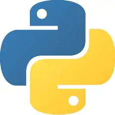
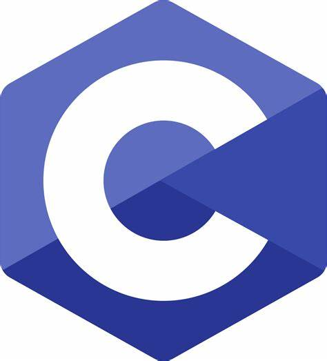

Technical Skills

Python

C
SQL

Linux
Soft Skills
- Communication
- Presentation
- Teamwork
- Problem Solving
- Time Management
- Adaptability
I’m a passionate Computer Science student at MIT Academy of Engineering, Pune, driven by curiosity and creativity. I love designing smart and efficient digital solutions that solve real-world problems. My technical journey includes building IoT-based automation systems and full-stack web applications. I’ve gained hands-on experience through internships with IBM (via Edunet Foundation), where I’m learning Python and AI tools, and CodSoft, where I worked on responsive websites and front-end/backend coordination. I’m dedicated to continuous learning, teamwork, and building a strong foundation in software development. My ultimate goal is to grow into a skilled Full Stack Developer who blends logic with intuitive design.
MIT Academy of Engineering, Pune
Computer Science (2024–2028)
Abhinav Academy, Gadhinglaj
Creative High School
I am currently doing an internship at IBM via Edunet Foundation. I’m learning Python, AI tools, and real-world software skills through guided training modules and virtual labs.
At CodSoft, I worked on building web pages including responsive portfolios and contact forms. I learned to manage frontend/backend coordination and improved my development workflow.
Python
C
SQL
Linux
A home automation system using ESP8266 and Blynk app to control four lighting zones. It saves electricity by enabling users to remotely monitor and automate lighting conditions.
This is a responsive web-based platform that allows students to pre-order food and reserve seats. It helps improve order handling and reduce peak time crowding.
I aspire to become a Full Stack Developer, building seamless user experiences and efficient backend systems. I'm dedicated to continuous learning and contributing to meaningful tech solutions.